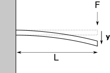
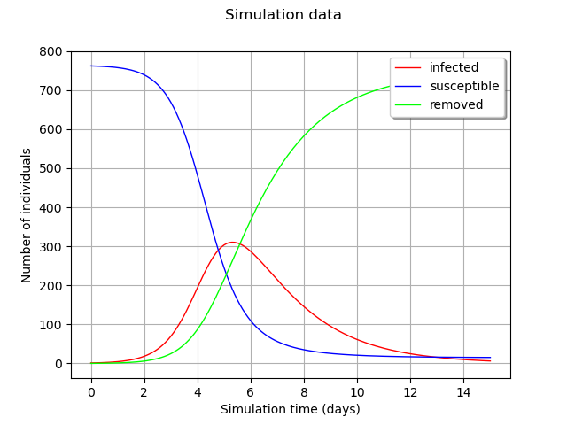

Models description#
Examples used in this documentation rely on several models.
Following sections show how they works.
The cantilever beam model#
{kind=link}

We consider a cantilever beam defined by its Young’s modulus E, its length L and its section modulus I.
One end of the cantilever beam is fixed in a wall and we apply a concentrated
bending load F at the other end of the beam, resulting in a deviation Y.
The mechanical equation ruling the deviation is
This model is implemented in Modelica language:
model deviation
output Real y;
input Real E (start=3.0e7);
input Real F (start=3.0e4);
input Real L (start=250);
input Real I (start=400);
equation
y=(F*L^3)/(3*E*I);
end deviation;
The epidemiological model#
This model describes epidemics which propagate through human contact. An isolated population is considered, whose total number is constant. The people are divided in three categories:
the Susceptibles (who are not sick yet),
the Infected (who are currently sick),
the Removed (who are either dead or immune).
The disease can only be propagated from Infected to Susceptibles.
This happens at a rate called infection rate \(\beta\).
An Infected becomes Removed after an infection duration \(\gamma\) corresponding to the inverse of the healing_rate.
{kind=link}

The evolution of the number of Susceptibles, Infected and Removed over time writes:
This model is implemented in Modelica language. The default simulation time is 50 units of time (days for instance).
model epid
parameter Real total_pop = 763;
parameter Real infection_rate = 2.0;
parameter Real healing_rate = 0.5;
Real infected;
Real susceptible;
Real removed;
initial equation
infected = 1;
removed = 0;
total_pop = infected + susceptible + removed;
equation
der(susceptible) = - infection_rate * infected * susceptible / total_pop;
der(infected) = infection_rate * infected * susceptible / total_pop -
healing_rate * infected;
der(removed) = healing_rate * infected;
annotation(
experiment(StartTime = 0.0, StopTime = 200.0, Tolerance = 1e-6, Interval = 0.1));
end epid;
We focus on the effect of the infection_rate and healing_rate on the evolution of the infected category.
Hence two input variables and one time-dependent output.
References#
Influenza in a boarding school. In: British Medical Journal 587.1, pdf